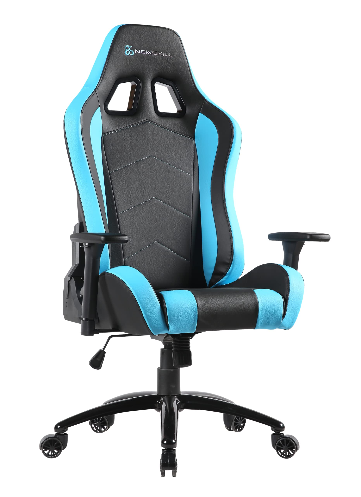
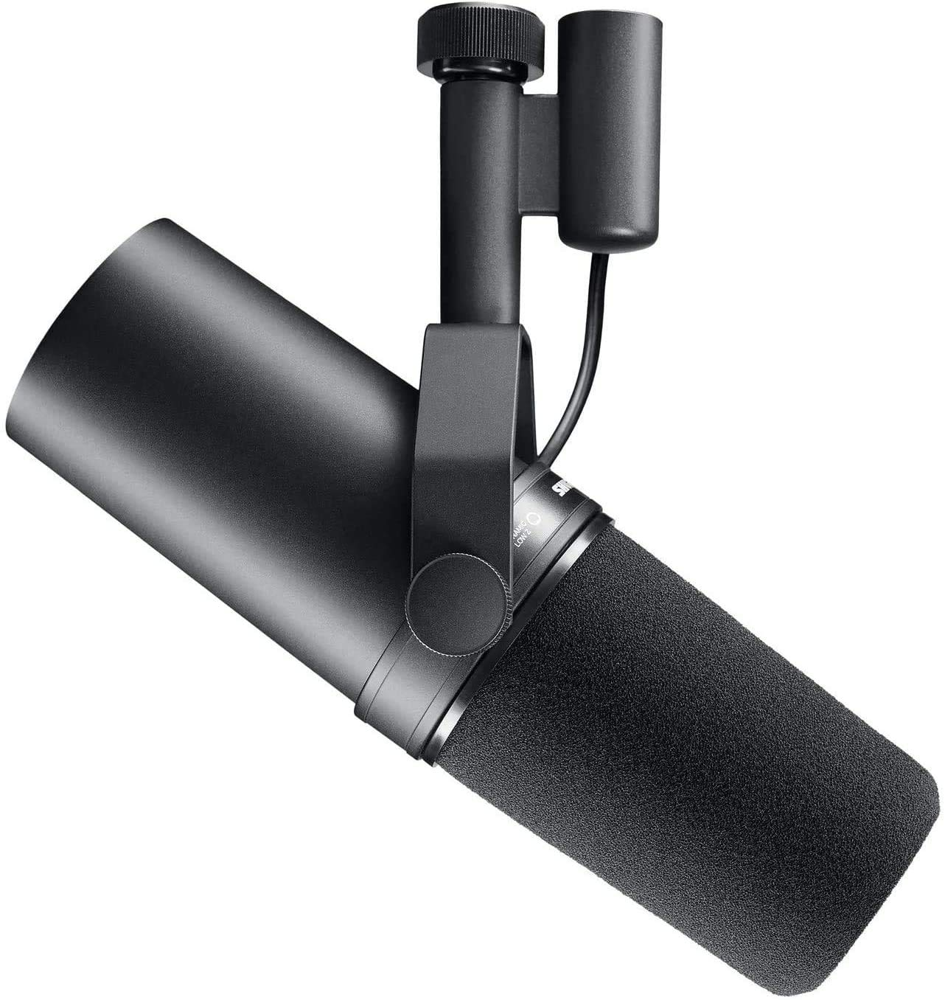
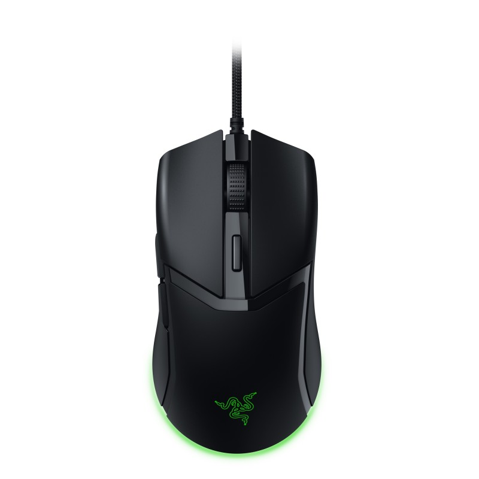
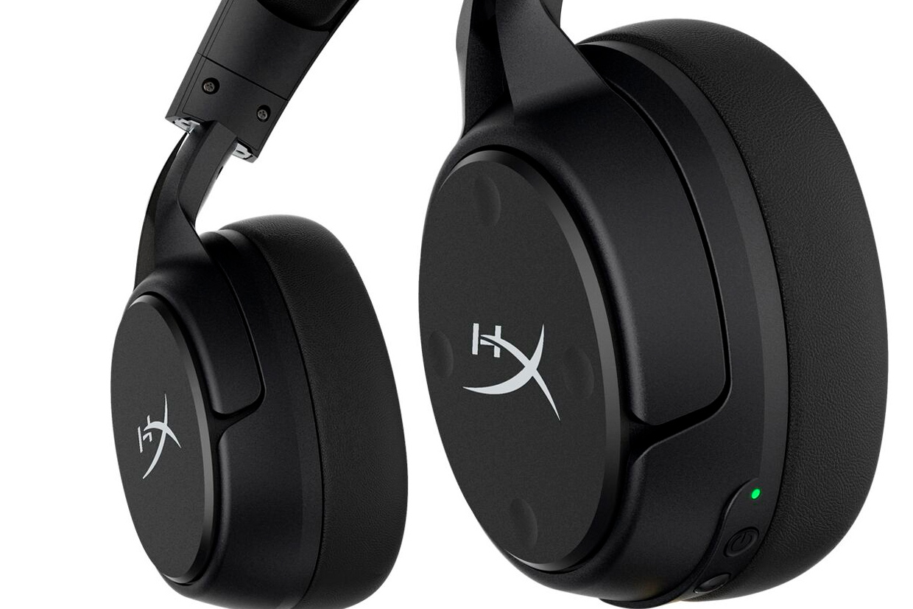

Reviews
Aquí encontrarás las mejores valoraciones y opiniones
| Producto | Descripción | Puntuación | Mas info |
|---|---|---|---|
|  | Silla Gaming New Skill Esta silla esta posicionada actualmente, como una de las mejores, en relación a calidad precio.Tiene incorporación de hasta 30 grados, con reposabrazos y un cojin cervical y otro para la nuca, además de una duración aproximada de unos 5 años |
9.25/10 | Leer más |
|  | Micrófono Shure Estamos hablando del mejor micrófono que hay actualemente en el mercado, utilizado en múltiples podcast y estudios profesionales. Calidad de audio inmejorable y como única pega, pondría su elevado precio |
8.45/10 | Leer más |
|  | Ratón Razer Si queremos un buen ratón para jugar shooters, o videojuegos en general, Razer es tu marca, con una estructura que se adapta perfectamente a tu mano, 0.0001 de delay, botones auxiliares configurables, y una comodidad precisa para el gamer |
8.78/10 | Leer más |
|  | Cascos HiperX Si buscamos la mejor calidad precio en cascos gaming, HiperX es tu marca, con un aislamiento prácticamente total, que te permitirá centrarte en tus partidas, un micrófono con una calidad de audio increible, almohadilla en la cabeza, y un sonido del juego, que te permitirá vivir la experiencia al cien por cien |
7.98/10 | Leer más |